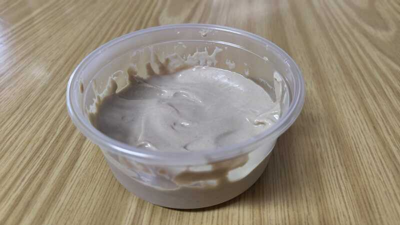

Tahini

Description
A homemade tahini made from raw tahini.
Easy to make and delicious, I combine it with a large variety of dishes.
Ingredients
- Raw tahini
- Water
- Lemon
- Salt
Steps
- Mix the raw tahini with water,
adding water periodically until it is as smooth as you want it to be
- Add lemon and salt according to taste